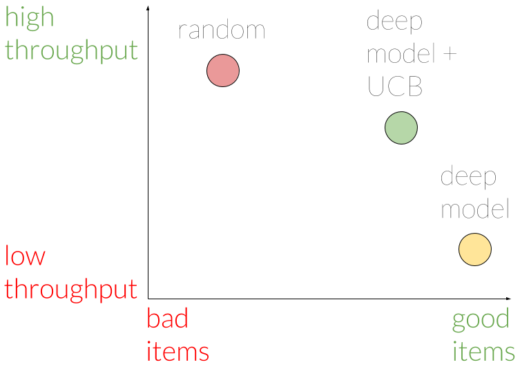

This is a joint post with Inbar Naor. Originally published at engineering.taboola.com.
Now that we know what uncertainty types exist and learned some ways to model them, we can start talking about how to use them in our application.
In this post we’ll introduce the exploration-exploitation problem and show you how uncertainty can help in solving it. We’ll focus on exploration in recommender systems, but the same idea can be applied in many applications of reinforcement learning — self driving cars, robots, etc.
Problem Setting
The goal of a recommender system is to recommend items that the users might find relevant. At Taboola, relevance is expressed via a click: we show a widget containing content recommendations, and the users choose if they want to click on one of the items.
The probability of the user clicking on an item is called Click Through Rate (CTR). If we knew the CTR of all the items, the problem of which items to recommend would be easy: simply recommend the items with the highest CTR.
The problem is that we don’t know what the CTR is. We have a model that estimates it, but it’s obviously not perfect. Some of the reasons for the imperfection are the uncertainty types inherent in recommender systems, which we discussed in the first post of the series.
The Exploitation vs Exploration Tradeoff

So now we’re facing a challenging situation — one that we’re all familiar with from our day-to-day lives: imagine you’ve just entered an ice cream shop. You now face a crucial decision — out of about 30 flavors you need to choose only one!
You can go with two strategies: either go with that favorite flavor of yours that you already know is the best; or explore new flavors you never tried before, and maybe find a new best flavor.
These two strategies — exploitation and exploration — can also be used when recommending content. We can either exploit items that have high CTR with high certainty — maybe because these items have been shown thousands of times to similar users; or we can explore new items we haven’t shown to many users in the past. Incorporating exploration into your recommendation strategy is crucial — without it new items don’t stand a chance against older, more familiar ones.
Let’s explore exploration approaches
The easiest exploration-exploitation approach you can implement is the ϵ-greedy algorithm, where you allocate ϵ percents of the traffic to explore new items in a random manner. The rest of the traffic is reserved for exploitation.
Despite not being optimal, this method is easy to understand. It can serve as a solid baseline for more sophisticated approaches. So how can we look for good items in a wiser manner?
looking for good items in a wise manner
A more advanced approach — Upper Confidence Bound (UCB) — uses uncertainty. Each item is associated with its expected CTR, and confidence bound over that CTR. The confidence bound captures how uncertain we are about the item’s CTR. The vanilla UCB algorithm keeps track of the expected CTR and confidence bound by using empirical information alone: for each item we keep track of the empirical CTR (what percent of similar users have clicked on it), and the confidence bound is calculated by assuming a binomial distribution.
Take for example the plain chocolate flavor you always order. You know it’s good — you give it 8 stars out of 10. Today a new flavor has arrived. You have no empiric information about it, which means it can be anything from 1 to 10 stars. Using this confidence interval, if you would want to explore you’d go with the new flavor, since there’s the chance it’ll be a 10 stars flavor.
That strategy is exactly what UCB is all about — you choose the item with the highest upper confidence bound value — in our case confidence bound over CTR estimation. The motivation behind this strategy is that over time the empiric CTR will tend towards the true CTR, and the confidence bound will shrink to 0. After enough time, we’ll explore everything.
Another popular approach is the Thompson Sampling method. In this approach we use the entire estimated distribution over the item’s CTR instead of only a confidence bound. For each item we sample a CTR out of its distribution.
These approaches might work well when the number of available items is fixed. Unfortunately, at Taboola every day thousands of new items enter the system, and others become obsolete. By the time we get a reasonable confidence bound for an item it might leave the system. Our efforts would have been in vain. It’s like doing a world tour, each day visiting a new town with a vast amount of ice cream flavors to explore. The horror!
We need an approach that can estimate the CTR of a new item without showing it even once. We need some food critic magazine that will guide us through the buffet of content recommendations.
Consider a new type of chocolate flavor that just arrived. Since you know you love chocolate you have a pretty good guess that you’ll like the new flavor too. In the vanilla UCB approach (no, that’s not a name of a flavor), you won’t be able to infer it — you rely on empirical information only.
In a future post we’ll elaborate on how we use a neural network to estimate the CTR of a new item, as well as the level of uncertainty. Using this uncertainty, we can apply the UCB approach in order to explore new items. Unlike the vanilla UCB that relies on empirical data, here we can use the model’s estimation to avoid showing items with low CTR. We can gamble on the horses we think will win.
🐎
Online metrics and results
How can we know how well we explore new items? We need some exploration throughput metric. In Taboola we have A/B testing infrastructure supporting many models running on different shares of traffic.
Back to ice cream! Let’s say you brought your friends to help you explore the different flavors. Obviously if one of your friends randomly picks flavors, he has the best exploration throughput, but not the smartest. The other friend that orders the flavor the others have found tasty enjoys the most, but contributes nothing to the exploration effort.
At Taboola we measure exploration throughput as follows: for each item that has been shown enough times, and in enough different contexts (e.g — different web sites) we declare that item to have crossed the exploration phase. Next, we analyze which models contributed to this successful effort. In order to count, a model has to show that item enough times.
Using this perspective, the throughput of a model is defined to be the number of items it contributed to.

Using this metric, we were able to assert that indeed showing items randomly yields the best throughput, but with a tendency for bad items. A model that doesn’t use the UCB approach shows good items, but has worse throughput. The model with UCB is somewhere between in terms of throughput, and shows only slightly worse items compared to the non-UCB model.
Hence, we conclude our UCB model has a good tradeoff between exploring new items, and choosing the good items. We believe this tradeoff is worthwhile in the long term.
Final thoughts
The exploration-exploitation problem is an exciting challenge for many companies in the recommender systems domain. We hope our advancements will serve others in their journey of providing the best service to their users. We believe this is a small step in a big journey yet to be fulfilled, and we’re intrigued by the thought of what shape this field will take in the following years.
In the next post of the series we’ll elaborate on the model we used for estimating CTR and uncertainty, so stay tuned.
This is the third post of a series related to a paper we’re presenting in a workshop in this year KDD conference: deep density networks and uncertainty in recommender systems.
The first post can be found here.
The second post can be found here.
Comments !